Menu
Spiral Ecstasy Roll
Shrimp, crab stick and avocado rolled with salmon, yellowtail and tuna
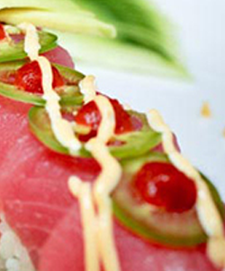Banzai Roll
Salmon, eel, octopus and avocado
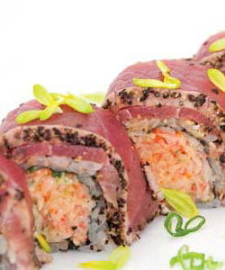Scallop Banzai Roll
Salmon, eel, scallops and avocado
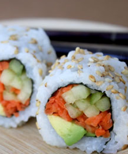Spicy Tuna Roll
Ground spicy tuna with cucumber and Kaiware topped with Unagi Sauce and sesame seeds
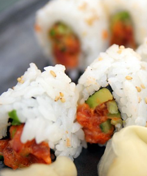Tuna Rio
Shrimp tempura, cream cheese, and spicy mayo in a reverse roll with tuna, baked and topped with hot sauce and jalapeños
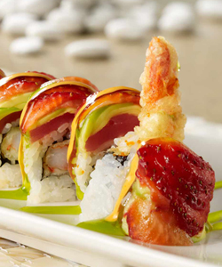Sheila Maki
Butterfish, crab stick, avocado, masago and spicy mayo in a reverse roll layered with tempura drops and seasoned sweet soy

Volcano Roll
Spicy Tuna and Cream Cheese Topped with a Baked Mound of Spicy Crab, Spicy Mayo and Sriracha
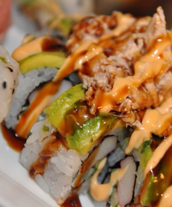Edamame
Whole soy bean pods steamed tossed with sea salt
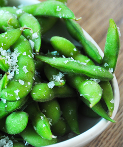Spring Roll
Fried veggie spring rolls with cabbage and carrots
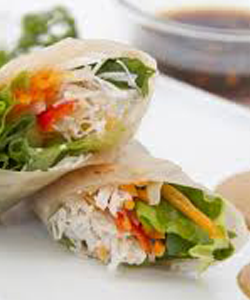Strawberry Roll
Fresh strawberries rolled with rice and soy paper. Garnished with a strawberry glaze
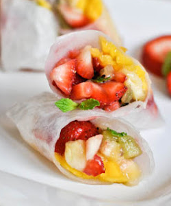Big Tempura Maki
Shrimp, crab stick, chef’s choice of fish and avocado batter fried together and wrapped in rice and nori
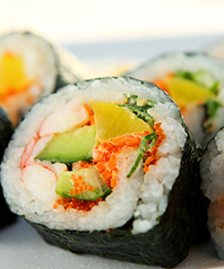Kanki By The Sea
Eel and avocado rolled in crab stick and tobiko, served on a bed of seaweed salad with a cream sauce
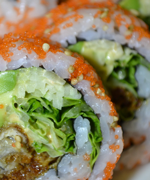